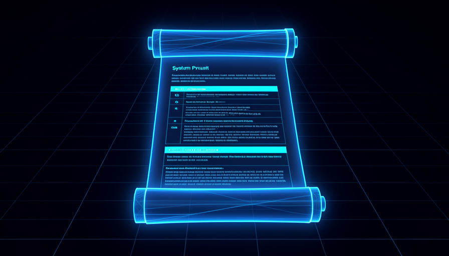
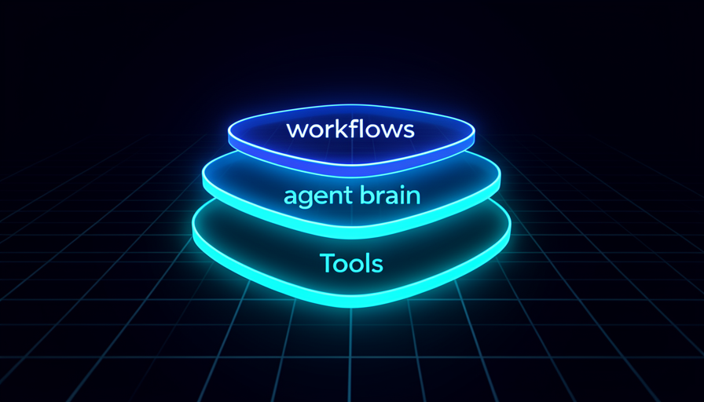
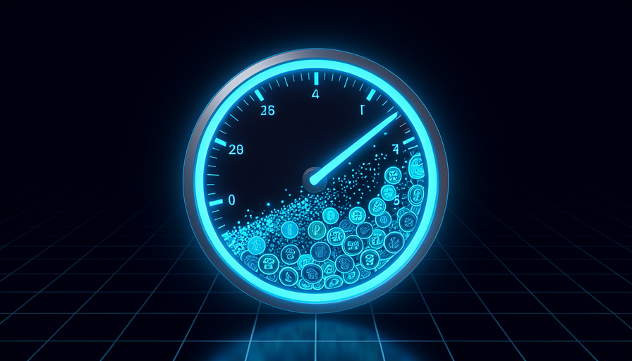

O caminho da trilha 2: do arquivo de instruções (a "constituição" do projeto) à arquitetura WAT, ao protocolo MCP, à economia de contexto e ao RAG — as camadas internas que separam o protótipo do sistema confiável.
Mapa da trilha
📜 Engenharia de CLAUDE.md
O system prompt persistente do projeto
🔠 O Framework WAT
Workflows + Agent + Tools, a fundo
🔌 MCP por Dentro
Como o agente ganha ferramentas externas
🧠 Contexto & Tokens
Não deixe o agente "apodrecer"
🗂️ RAG & Dados
Dar memória e fontes ao agente
Como percorrer
Os módulos são independentes, mas a ordem 2.1 → 2.5 constrói camada sobre camada: instruções, arquitetura, ferramentas, economia e dados.
Conteúdo detalhado

📜 Engenharia de CLAUDE.md
O CLAUDE.md é o system prompt persistente do projeto — a "constituição" que o agente relê a cada sessão. Anatomia, regras operacionais, enxugar para sob ~500 linhas, o que vai no CLAUDE.md vs. em skills, e como iterar o arquivo conversando.
Um arquivo markdown na raiz do projeto que define papel, contexto e preferências — e que o agente lê no início de cada sessão, sem você reexplicar.
É o que dá consistência entre sessões; mal escrito, o agente esquece as regras toda vez.
Persistente; markdown; lido a cada sessão; papel + contexto + regras.
As seções típicas: quem o agente é, o que está sendo construído, regras de operação, estilo de comunicação e a estrutura de pastas do projeto.
Um esqueleto claro evita arquivos confusos e regras perdidas.
Papel; contexto; regras; estilo; estrutura.
Diretivas de comportamento: procurar uma ferramenta existente antes de criar uma nova, aprender e adaptar quando algo falha, e manter os arquivos atualizados.
São as regras que ativam o loop de auto-melhoria do agente.
Reuso antes de criar; aprender ao falhar; manter atual.
Limitar o arquivo (alvo: sob ~500 linhas) porque ele entra no contexto toda sessão; arquivos longos diluem as regras importantes.
Se o agente erra a mesma regra apesar de escrita, o arquivo pode estar longo demais e a regra "se perde".
Sob ~500 linhas; só conteúdo de toda sessão; conciso.
CLAUDE.md guarda só o que vale para toda sessão (propósito, regras, framework); instruções de tarefas específicas vão para skills, carregadas sob demanda.
Colocar tudo no CLAUDE.md estoura a janela de contexto; skills economizam.
Toda sessão → CLAUDE.md; sob demanda → skills.
O CLAUDE.md não é escrito uma vez e esquecido — você pede ao agente para adicionar/alterar seções ("adicione uma regra de manter explicações curtas").
O arquivo evolui com o projeto; iterar é como ele fica afiado.
Editável sempre; pedir em linguagem natural; documento vivo.

🔠 O Framework WAT a Fundo
A estrutura por trás de todo workflow agêntico: W = Workflows (instruções markdown = SOP), A = Agent (o coordenador que decide), T = Tools (scripts de um trabalho cada). Mais o loop de auto-melhoria, a estrutura de pastas e quando NÃO usar WAT.
Um padrão de três camadas — Workflows, Agent, Tools — que dá ao agente um "manual + cérebro + mãos". A maioria dos builds agênticos cabe nesse molde.
Dá um vocabulário comum e uma forma repetível de estruturar qualquer projeto.
W + A + T; manual + cérebro + mãos; repetível.
Arquivos markdown em linguagem natural (com títulos, bullets, negrito) que funcionam como uma descrição de cargo ou SOP, dizendo ao agente o que fazer.
É a camada que você mais edita; um bom workflow é metade do resultado.
Markdown; SOP; objetivo + entrada + saída + passos.
O próprio assistente de código: o cérebro coordenador que lê os workflows, vê as ferramentas disponíveis e decide qual usar e quando — como um gerente de projeto delegando.
Entender que o agente decide (não é roteiro fixo) muda como você escreve as instruções.
Coordenador; lê e decide; delega às tools.
Scripts (geralmente Python) que fazem o trabalho concreto, idealmente um por tarefa (raspar um site, gerar um PDF, analisar dados). O agente os escreve e conserta — você não precisa programar.
Tools pequenas e focadas são fáceis de testar, reusar e consertar.
Um trabalho cada; auto-geradas; reutilizáveis.
O agente roda um workflow, encontra um erro, diagnostica, conserta a tool e atualiza o arquivo de workflow para o erro não se repetir — execuções ficam mais suaves e rápidas com o tempo.
É o superpoder do WAT: o sistema melhora a si mesmo enquanto roda.
Erro → diagnóstico → fix → workflow atualizado.
A organização recomendada: pasta workflows, pasta tools, pasta temporary (arquivos intermediários/saída), o arquivo de ambiente (.env, segredos) e o CLAUDE.md.
Uma estrutura clara faz o agente achar o que precisa e separar segredos do código.
workflows; tools; temporary; .env; CLAUDE.md.
Para tarefas únicas, experimentação inicial ou instruções que cabem numa frase, montar a estrutura WAT é exagero — basta digitar o pedido.
Saber quando NÃO usar evita burocracia e desperdício de contexto.
Tarefa única; one-off; não force a estrutura.
🔌 MCP por Dentro
O protocolo que dá ferramentas externas ao agente. O que ele resolve, como o agente descobre e decide ferramentas, o .mcp.json e a chave manual (nunca no chat), project-level vs global, onde achar servers, como verificar/diagnosticar e o custo de contexto.
MCP (Model Context Protocol) deixa uma única conexão expor várias ferramentas/ações — como o Gmail expondo enviar, rascunhar e buscar e-mails de uma vez.
É como a IA ganha "braços" sem você integrar cada ação à mão.
Protocolo; uma conexão = muitas tools; ações expostas.
Assim que agente e server se conectam, o agente conhece todas as ferramentas disponíveis e decide sozinho qual chamar, quando e com quais parâmetros.
Você descreve o resultado; a escolha da tool é dele.
Descoberta; decisão autônoma; parâmetros.
Ao instalar um server, o agente gera um .mcp.json com a configuração e um espaço para a chave de API; você cola a chave manualmente no arquivo — nunca no chat.
É a regra de segurança básica do MCP: segredo fora da conversa.
.mcp.json; placeholder; chave manual; nunca no chat.
A config de MCP pode ficar global (toda a máquina) ou no nível do projeto; o nível de projeto é o recomendado para manter segredos e contexto isolados.
Config global pode disparar avisos de segurança a cada reinício; project-level resolve.
Project-level; isolamento; mover para a pasta do projeto.
Servers vivem em diretórios dedicados (ex.: mcp.so) ou no GitHub (busque "MCP server" + nome do serviço). Categorias comuns: raspagem (Firecrawl), bancos (Postgres, Supabase), documentos, comunicação.
Saber onde procurar acelera muito o build.
Diretórios; GitHub; categorias de server.
O comando /mcp lista servers instalados e o status; se um server novo não aparece, reiniciar o assistente resolve na maioria das vezes.
É o primeiro passo de qualquer troubleshooting de MCP.
/mcp; status; reiniciar primeiro.
Cada server ativo injeta as definições das suas ferramentas no contexto — o que consome tokens. Desligar os que não usa libera contexto.
Menos ruído no contexto = menos erros e menos custo.
Definições de tool = tokens; desligar não usados.

🧠 Contexto & Tokens
Não deixe o agente "apodrecer". Context rot e a degradação após ~60%, os limiares (0-50 / 50-70 / 70-85 / 85%+), /clear vs /compact, uma tarefa por sessão, definir "pronto" para evitar loop, e estratégias de economia.
A qualidade cai gradualmente quanto mais longa a sessão; os erros aparecem mais depois de ~60% de uso do contexto, quando histórico ruidoso abafa as regras centrais.
Saber disso evita brigar com um agente que só está "cansado".
Degradação; ~60%; ruído abafa regras.
Uma régua: 0-50% seguro; 50-70% amarelo (pense em compactar); 70-85% laranja (rode /compact); acima de 85% rode /clear e recomece.
Transforma "context rot" abstrato em ação concreta por faixa.
Verde / amarelo / laranja / vermelho.
/clear zera toda a conversa (use ao trocar de tarefa ou quando a qualidade cai); /compact gera um resumo esperto que mantém o essencial e comprime o resto (use no meio de uma tarefa longa).
Escolher o errado perde contexto útil ou mantém lixo.
clear = reset; compact = resumo; quando usar cada.
Manter cada sessão focada numa tarefa e limpar antes de começar a próxima, em vez de reaproveitar uma conversa inchada para algo não relacionado.
Contexto limpo = mais precisão e menos token gasto.
Uma tarefa; limpar antes; foco.
Dar ao agente um critério explícito de conclusão (ex.: "exatamente 75 perfis") para ele parar em vez de pesquisar sem fim.
Sem um "pronto", o agente pode entrar em loop e queimar tokens.
Definição de pronto; critério; evita loop.
As alavancas de economia: usar skills (carregam sob demanda), desligar MCP não usados, manter o CLAUDE.md enxuto e uma tarefa por sessão.
Junta tudo do módulo numa rotina de "higiene de contexto".
Skills; desligar MCP; CLAUDE.md enxuto.
🗂️ RAG & Dados
Dar memória e fontes ao agente. O problema (a IA não sabe o que não está no contexto), system prompt vs vector store, embeddings & vector store em linguagem simples, o indexador, o classifier que roteia antes de gastar o agente, e confidence score & fallback.
Um modelo só responde sobre o que está no contexto ou no treino. Para responder sobre seus documentos (políticas, FAQ), é preciso colocar essa informação ao alcance dele.
É o "porquê" do RAG: sem fonte, a IA inventa ou erra.
Fora do contexto = invisível; fundamentar em fonte.
System prompt embute o texto direto (simples e barato para poucos documentos); vector store busca só os trechos relevantes (escalável, melhor para crescer).
Escolher errado custa contexto ou limita o crescimento.
Embutir vs buscar; pequeno vs escalável.
Embeddings transformam texto em números que capturam significado; o vector store guarda esses números e acha por semelhança de sentido, não por palavra exata.
É o motor que faz a busca "entender" a pergunta.
Significado em números; busca por semelhança.
Um workflow separado que lê os documentos, divide em pedaços, gera embeddings e popula o vector store — rodado uma vez (ou ao atualizar a base).
Separar indexação de consulta é o padrão de arquitetura do RAG.
Trigger manual; loader/splitter; popular o store.
Um nó classificador decide cedo se a entrada é relevante (ex.: pergunta de suporte ou não) e roteia — só o que importa chega ao agente caro.
Triagem barata antes do agente economiza tokens e evita respostas fora de escopo.
Triagem; roteamento; só o relevante passa.
Quando a busca não acha algo relevante, o agente emite um marcador de "não achei" e cai num fallback (ex.: "vamos pesquisar e retornar") em vez de inventar.
Um agente honesto que recusa inventar é um resultado desejado, não um bug.
Marcador de confiança; fallback; não alucinar.